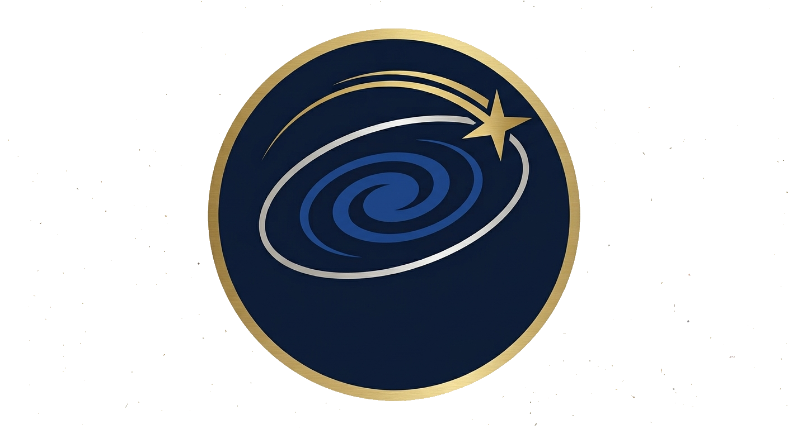

01
Páginas Web
Webs institucionales, portfolios y landing pages veloces, accesibles y con diseños que convierten visitantes en clientes.

ESTELAR·CONNECTION★ AGENCIA DE DESARROLLO WEB & SISTEMAS
En Estelar Connection diseñamos y desarrollamos páginas web, plataformas y sistemas a medida. De las estrellas a tu pantalla.
01 / SERVICIOS
01
Webs institucionales, portfolios y landing pages veloces, accesibles y con diseños que convierten visitantes en clientes.
02
Plataformas de gestión: inscripciones, usuarios, reportes y automatización de procesos que hoy se hacen a mano.
03
Despliegue, contenedores y administración de servidores Linux para mantener tus sistemas siempre arriba, seguros y veloces.
02 / PASARELA
Nuestras tecnologías desfilan por la pasarela. ← arrastrá
 LENGUAJE
LENGUAJEEstructura semántica de toda la web.
 ESTILO
ESTILODiseño, layout y animaciones.

LENGUAJEInteractividad y dinamismo en el navegador.
JavaScript con tipado fuerte y seguro.
Interfaces modernas y componentes reutilizables.
Estilos utilitarios de desarrollo veloz.
Grids y componentes listos para usar.
Back-end, automatización y datos.
Clásico del back-end web.
Robusto para aplicaciones y servicios.
Alto rendimiento y sistemas.
JavaScript del lado del servidor.
Base relacional avanzada y confiable.
Base relacional popular y probada.
Derivado de MySQL de código abierto.
Contenedores para todo ambiente.
Control de versiones colaborativo.
Servidores y administración de sistemas.
03 / NOSOTROS
Nacimos desde la digitalizacion de un comedor escolar, migracion de registros físicos a plataformas web completas y armamos servidores. Desde la base de datos hasta el último píxel de la interfaz, hacemos que la tecnología trabaje por vos.
Creemos en software simple, directo y confiables. Somos curiosos, autodidactas y metódicos; cada proyecto es una constelación nueva por descubrir.
Conectar procesos con tecnología y construir productos que resuelvan de verdad.
Autodidacta · Equipo · Comunicación clara · Metodologías ágiles · Calidad.
04 / TRABAJO
Un sistema para el comedor escolar con multiples usuarios, basesdedatos, servidores, recuperacion de cuentas y pdf.
Plataforma full-stack para la EET N°21: web pública + sistema de gestión de inscripciones internas. Migración digital completa de registros físicos.
05 / CONTACTO